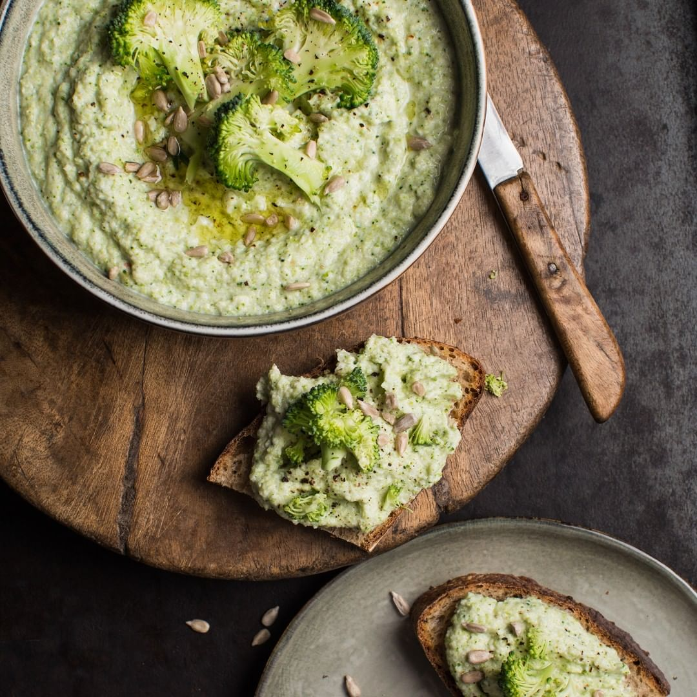

Zeleninová nátierka — Normy Jedál
Máte v chladničke extra brokolicu a neviete čo s ňou? Pripravte z nej výbornú a zdravú nátierku. A ak sa vám recept páči, pridajte do komentárov emoji brokolice 🥦.
🥦 Rýchla brokolicová nátierka 🥦
Príprava: 10 minút
Tepelná úprava: 6 minút
Náročnosť: ľahké
Počet porcií: 6
Výživové hodnoty 1 porcie: 65 kcal | 4,3 g bielkovín | 6 g sacharidov | 2,7 g tukov
INGREDIENCIE
400 g brokolice rozobratej na ružičky
200 g domácej Lučiny (môžete nahradiť aj ľubovoľne tučným tvarohom)
3 lyžičky lahôdkového droždia
soľ
čierne korenie
POSTUP PRÍPRAVY
1. Do hrnca napustite dostatočné množstvo vody, osoľte ju a priveďte do varu.
2. Do vriacej vody vložte ružičky brokolice, zdroj tepla znížte na stredný stupeň a brokolicu uvarte do mäkka (4 – 6 minút).
3. Vodu zlejte, k brokolici pridajte domácu Lučinu a rozmixujte dohladka.
4. Nakoniec všetko dochuťte soľou, korením a lahôdkovým droždím.
5. Nátierku skladujte maximálne 2 – 3 dni v chladničke.
TIP: Nátierku podávajte na chlebe. Môžete ju ozdobiť ružičkami brokolice a slnečnicovými semienkami.
#brokolica #brokolicovanatierka #nátierka #natierka #zeleninovanatierka #desiata #lahkavecera #chlieb #jarnyrecept #jar #brokolice #jednoduchejedlo #jedlojecesta #vegetarianske #vegetarianskejedlo #chutnerecepty #kedzdraviechuti #zdravemenu #vkuchyni #domacakuchyna #zijemzdravo #recepty #zdravoachutne #zdravo #topjedlo #zdravoafit #fitreceptysk #mojejedlo #dnesvarim #dnesobedujem